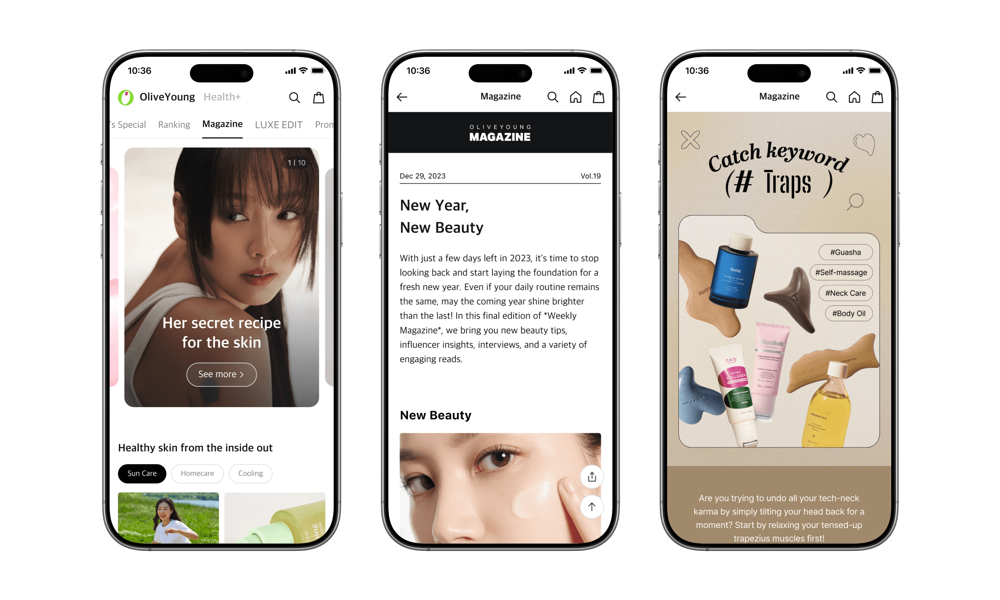

01
Delayed response to trends
The long production cycle made timely publishing difficult.

Contributions
Context
Olive Young's online mall uses magazine content to deepen engagement and create new sales and marketing opportunities. Yet producing a single article required repeated handoffs between content editors, designers, and publishers.

Problem
Every update moved through a long, dependency-heavy production process. That delay made it difficult to respond to fast-moving trends and steadily increased production costs.

01
The long production cycle made timely publishing difficult.
02
Content could miss the window when it was most relevant.
03
Lower engagement limited potential sales and marketing gains.
04
Recurring design and publishing support created ongoing labor costs.
Key User Groups
Content Editors
Primary
Editors owned the content but could not independently turn it into a finished article.
Designers & Publishers
Small content changes repeatedly interrupted their primary work and added coordination overhead.
Goals
The goal was to connect creative ideas with real-time publishing through an intuitive editorial system.
01

Reduce dependence on specialist teams while protecting content quality.
02

Make the system usable without technical training or prior experience.
03

Let editors publish quickly enough to respond to changing trends.

Success Metrics
Production Speed
How quickly one article could be created and published
Publishing Volume
Average number of articles published per month
Independence
Articles published without support from other teams
Solutions
01
Flexible, reusable module blocks would let editors assemble articles quickly without waiting for designers or developers.

02
Standardized properties and reusable assets would help every article maintain consistent quality.

03
A clear editing interface and live preview would reduce onboarding time for non-technical users.

Final Solution
Editors can define article information, add modules, edit content, preview the mobile output, and publish from one workspace.


Result
The modular workflow removed repeated cross-team handoffs, enabling editors to publish more content independently and at the speed of the business.
20 min
Production time2 weeks
162.5%
Average monthly
publishing volume
62.8%
Independently
published articles
Reflection
Challenge
Because this was a back-office tool, there was pressure to prioritize delivery speed over usability and finish within a month.
Learning
Consistently sharing the product vision and engaging stakeholders helped the team align around a more durable system—one that ultimately reduced production time to 20 minutes.